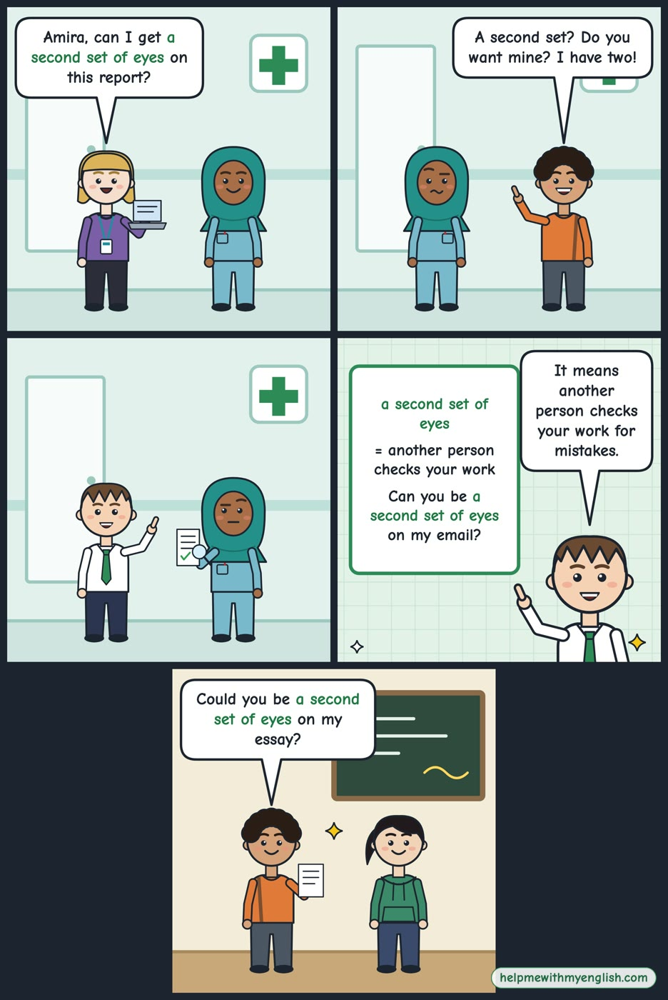

a second set of eyes
Another person who checks your work to find mistakes you missed.
Could you read my email? I need a second set of eyes before I send it.
Tip: Use it with 'need', 'want' or 'get': 'get a second set of eyes on something'. It's friendly and informal enough for colleagues, but also fine in most workplaces.
Hear it in conversation
Workbook
1. What does it mean?
In this conversation, what does 'a second set of eyes' mean?
2. Fill the gap
The report looks fine to me, but I'd like to get on it before we send it to the client.
3. Choose the best reply
Amira: I've been staring at this slide deck all afternoon and I can't tell if it's any good.
4. Your turn: speak
Tell me about a time when someone helped you improve something you had written or prepared.
Show an example answer
Last year I wrote a long application for a course, and I was too close to it to see the problems. I asked my cousin to be a second set of eyes, and she found several small mistakes and one paragraph that was confusing. After I fixed those, the whole thing felt much stronger.
Answer key: a second set of eyes
- 1. A. Someone who reads or checks your work to catch mistakes you may have missed
- 2. a second set of eyes
- 3. B. Want me to be a second set of eyes? I can go through it now.
- 4. Example: Last year I wrote a long application for a course, and I was too close to it to see the problems. I asked my cousin to be a second set of eyes, and she found several small mistakes and one paragraph that was confusing. After I fixed those, the whole thing felt much stronger.
See it in a comic
